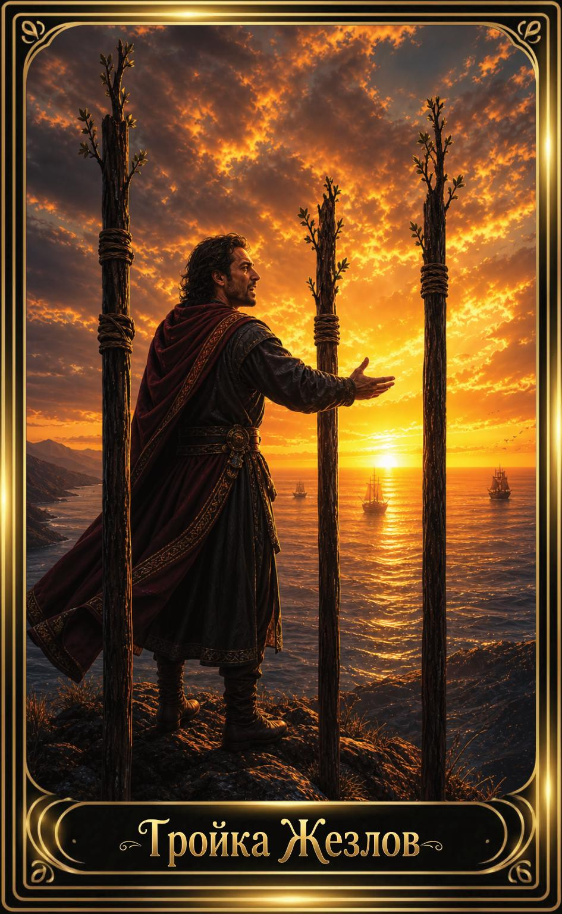

Тройка Жезлов — значение карты Таро
Тройка Жезлов — значение карты Таро

Тройка Жезлов — это карта расширения, уверенности и движения вперёд. Она символизирует момент, когда первые шаги уже сделаны, и теперь человек ожидает результаты, наблюдает за развитием и готовится к новым горизонтам. Это энергия прогресса, дальновидности и роста.
Общее значение
Тройка Жезлов указывает на успешное развитие начатого дела, расширение возможностей и уверенное движение к цели. Это карта, которая говорит: ты на правильном пути, и результаты уже близко.
Она также символизирует перспективы, путешествия и новые горизонты.
Любовь и отношения
В любви Тройка Жезлов говорит о развитии отношений, совместных планах, укреплении связи или переходе на новый уровень. Иногда — о расстоянии или ожидании встречи.
В тени — ожидания, которые затягиваются, или страх сделать следующий шаг.
Работа и финансы
В работе карта указывает на прогресс, расширение, успешное развитие проекта или выход на новые рынки. Это время уверенного роста.
В финансах — улучшение, стабильный рост и перспективные возможности.
Здоровье
Тройка Жезлов говорит о постепенном улучшении состояния, восстановлении и позитивной динамике. Это карта, указывающая на правильный путь.
Иногда — необходимость продолжать выбранный курс.
Совет карты
Продолжай двигаться вперёд. Карта советует сохранять уверенность, смотреть в будущее и не бояться расширять свои горизонты.
Твои усилия уже дают плоды — продолжай.
Теневая сторона
В тени Тройка Жезлов проявляется как ожидание без действий, страх перемен или сомнения в собственных силах. Иногда — как желание всё контролировать.
Карта напоминает: движение вперёд требует доверия.